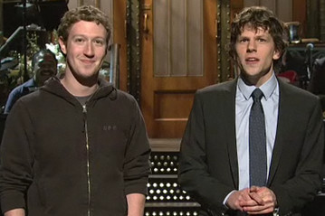

Jessie Eisenberg
Biography
Jesse Eisenberg was born on October 5, 1983, in the Queens borough of New York City, to Barry and Amy Eisenberg. Eisenberg's father was a sociology professor, and his mother occasionally entertained as a clown at children's parties. Eisenberg and his two sisters, Hallie Kate and Kerri, were raised in the suburb of East Brunswick, New Jersey.
Eisenberg became interested in acting at an early age. When he was 7, he starred as Oliver Twist in a children's theater production of the musical Oliver!and at the age of 13 he was an understudy in a Broadway revival of Tennessee Williams' Summer and Smoke.
Eisenberg attended East Brunswick High School in New Jersey before transferring to the High School of Performing Arts in New York. When he was a senior he received a breakthrough role in the independent comedy-drama film Roger Dodger, cast alongside Campbell Scott, Isabella Rossellini and Jennifer Beals.
Eisenberg attended college at The New School in New York and continued to act in a range of movies. He had a small role in M. Night Shyamalan's The Village in 2004. He attracted favorable reviews for his performance in 2005's well-received indie drama The Squid and the Whale, in which he played a bright, awkward teenager coming of age in 1980s Brooklyn while coping with the divorce of his parents, played by Jeff Daniels and Laura Linney. In 2007 he appeared in The Hunting Party (a drama set in Bosnia) and The Education of Charlie Banks. 2009 was another busy year: He co-starred with Kristen Stewart in the witty teen comedy-drama Adventureland, and with Woody Harrelson in the apocalyptic farce Zombieland.
Accomplishments
He stared in the film The Social Network, for which he earned the Best Actor Award from the National Board of Review of Motion Pictures, and nominations of Best Actor at the Golden Globes and Academy Awards. On Noveber 22, 2010, Eisenberg was honored, along with Whoopi Goldberg, Joycelyn Engle and Harvey Krueger, at the Children at Heart Celebrity Dinner Gala and Fantasy Auction, to benefit The Children of Chernobyl. On January 29, 2011, Esenberg hosted Saturday Night Live on NBC, with musical guest Nicki Minaj. During his opening monologue, Eisenberg was joined by Facebook creator Mark Zuckerberg.
| Academy Awards, USA |
|
2011
|
Nominated
Oscar |
Best Performance by an Actor in a Leading role the Social Network |
| Golden Globes, USA |
|
2011
|
Nominated
Golden Globe |
Best Performance by an Actor in a Motion Picture - Drama |
| BAFTA Awards |
|
2011
|
Nominated
BAFTA Film Award |
Best Leading Actor |
|
2010
|
Nominated
Rising Star Award |